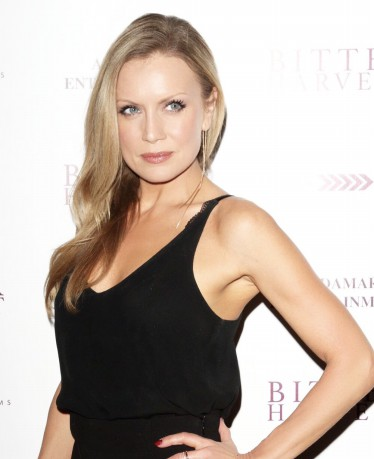

Alternativ: Jesus: His Life (Englischer Titel)

 IMDB-Wertung: 6.3 / 10
IMDB-Wertung: 6.3 / 10  Metascore: 0
Metascore: 0 
Eine historische Beleuchtung des Lebens von JC. Diesy geschieht jeweils aus den Augen anderer Zeitzeugen und Begleiter des Messias.
Jahr: 2019
Dauer: 40 Minuten
FSK:
Land: England Studio: History ChannelTonspuren:
Untertitel:
Auflösung: 1080p (1920x1080) Größe: 1730 MB
Genre: Drama, TV-Serie
Regisseur: Adrian McDowall, Ashley Pearce, Craig Pickles
Drehbuch:
Soundtrack:
Darsteller:
- Houda Echouafni als 12 episodes, 2019
- Cassie Bradley als 10 episodes, 2019
- Greg Barnett als 10 episodes, 2019
- Adam Ayadi als 9 episodes, 2019
- Robert R. Cargill als 9 episodes, 2019
- Abhin Galeya als 9 episodes, 2019
- Mark Goodacre als 8 episodes, 2019
 Amed Hashimi als 3 episodes, 2019
Amed Hashimi als 3 episodes, 2019- Jason Merrells als 3 episodes, 2019
- David Al-Fahmi als 2 episodes, 2019
- Anthony Barclay als 2 episodes, 2019
- Daniel Ben Zenou als 2 episodes, 2019
- Ben Affan als 1 episode, 2019
- Wendy Glenn als 1 episode, 2019
- Alex Gok als 1 episode, 2019
- Leilah Isaac als 1 episode, 2019
 Cornell John als 1 episode, 2019
Cornell John als 1 episode, 2019- Ramin Karimloo als 1 episode, 2019
 Anthony Kaye als 1 episode, 2019
Anthony Kaye als 1 episode, 2019- Gerald Kyd als 1 episode, 2019
 Amra Mallassi als 1 episode, 2019
Amra Mallassi als 1 episode, 2019- Liran Nathan als 1 episode, 2019
- Gary Oliver als 1 episode, 2019
- Doug Rao als 1 episode, 2019
- Mavin Rasheed als 1 episode, 2019
- Michael S. Siegel als 1 episode, 2019
-  Stephanie Vogt als 1 episode, 2019
- John Hopkins als 7 episodes, 2019
- Nicola Denzey Lewis als 3 episodes, 2019
- James Martin als 3 episodes, 2019
- Simon Sebag Montefiore als 3 episodes, 2019
- Otis Moss Iii als 3 episodes, 2019
- Joel Osteen als 3 episodes, 2019
- Shively Smith als 3 episodes, 2019
- Ben Witherington als 3 episodes, 2019
- Mahdi Chalkhaoui als 2 episodes, 2019
- Adam Marshak als 2 episodes, 2019
- Candida R. Moss als 2 episodes, 2019
- Youssef Tounzi als 2 episodes, 2019
- Bamshad Abedi-Amin als 1 episode, 2019
- Christina Cleveland als 1 episode, 2019
- Michael Curry als 1 episode, 2019
- Joshua Dubois als 1 episode, 2019
- Natalia Imperatori-Lee als 1 episode, 2019
- Elif Knight als 1 episode, 2019
- Mark Leuchter als 1 episode, 2019
- Kimberly Majeski als 1 episode, 2019
- Jonathan Morris als 1 episode, 2019
- Moumouni Seydou als 1 episode, 2019
- Susan Sparks als 1 episode, 2019
Datei: X:\HD-Serien\Jesus sein Leben\1. Josef.mkv seit 13.06.2019
Festplatte: HD Serien(I-ST)
 Es gibt insgesamt 182 Filme in der Gruppe 'HD-Serien'
Es gibt insgesamt 182 Filme in der Gruppe 'HD-Serien'
")